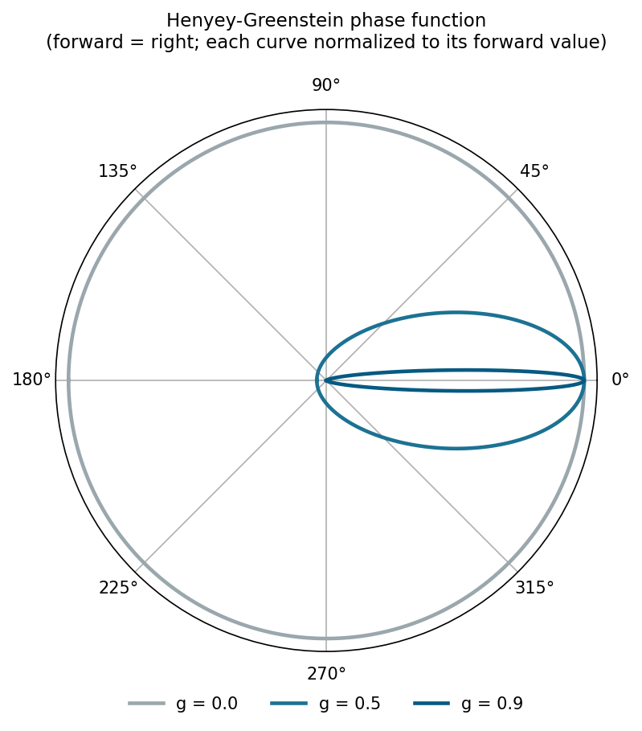
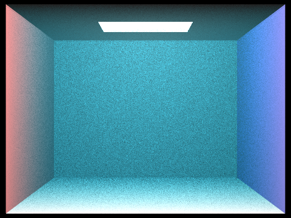
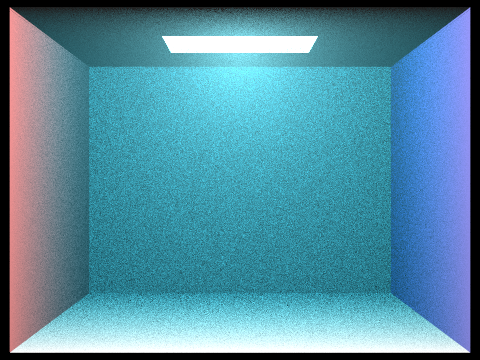
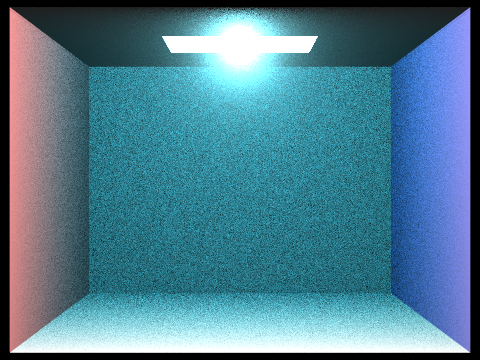
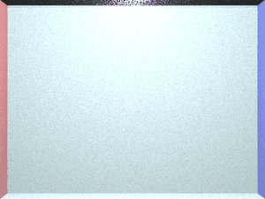
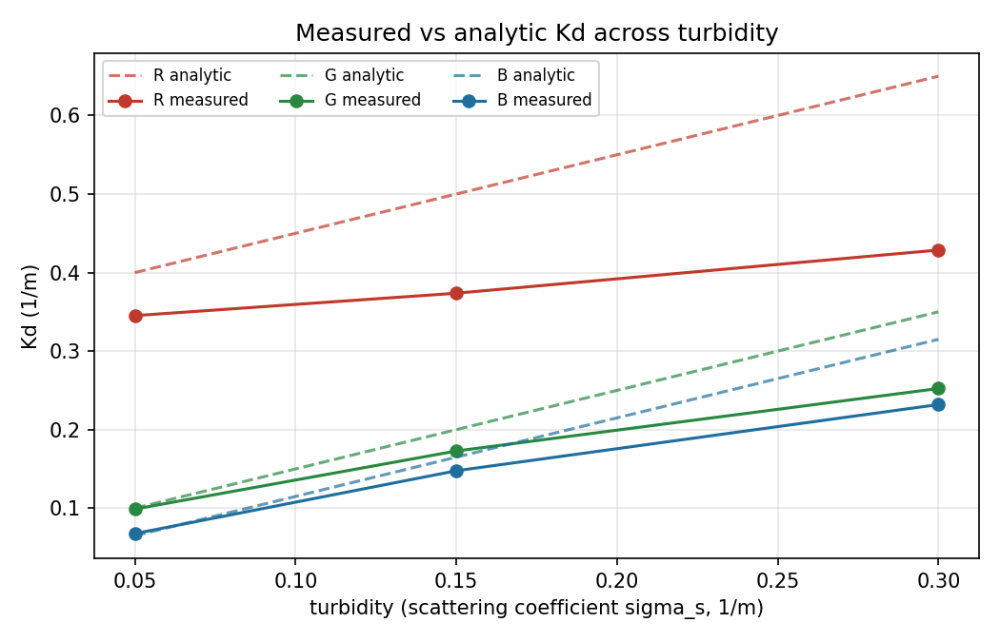
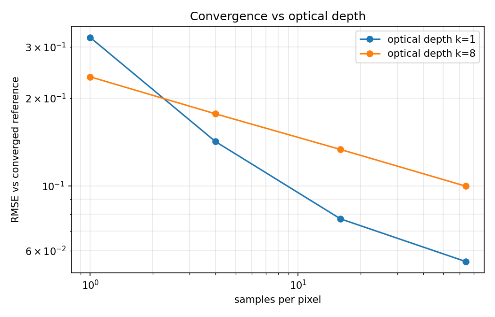

Zachary Liang · Blair Xu · CS 184, Summer 2026
Links: final video · interactive demo · source code · milestone
Photic extends our Homework 3 path tracer to render water as a participating medium, where light is absorbed and scattered continuously along a ray rather than only at surface hits. We model a homogeneous water volume with per-channel (RGB) absorption, particulate scattering, analytic free-flight distance sampling, transmittance-weighted next-event estimation, Russian roulette, and a forward-biased Henyey-Greenstein phase function with an adjustable asymmetry parameter. On top of the renderer we built a measurement layer that fits the diffuse attenuation coefficient Kd off the rendered images and compares it against the analytic single-scattering prediction. Our central result is that measured Kd falls below the naive prediction on every color channel, and the gap widens with turbidity, which is the signature of multiple scattering returning light to the beam. We also study how sample count scales with optical depth and derive predicted Secchi-disk visibility depths from the measured Kd.
Everything in stock Homework 3 assumes light travels through vacuum between surfaces, so radiance is constant along a ray and the renderer only decides what happens at intersections. Water breaks that: photons are absorbed and scattered the whole way along the ray. Our approach keeps the HW3 surface pipeline untouched and inserts a medium-aware layer around it, so with no water flag the renderer is byte-for-byte the original.
A new Medium class models a homogeneous body of water: a bounding volume, a per-channel
absorption coefficient sigma_a, a wavelength-neutral scattering coefficient
sigma_s, and total extinction sigma_t = sigma_a + sigma_s. The bounding box
is derived automatically from the loaded scene (the BVH root box), so any existing HW3
.dae can be rendered underwater with no new geometry. Two command-line flags control it:
-w sets turbidity (particulate sigma_s) and -k a depth scale
that multiplies both coefficients, which is physically equivalent to more water because Beer-Lambert
depends only on the product of coefficient and distance, and scaling both together preserves the
single-scattering albedo so the equivalence holds for all orders of scattering, not just the first.
For each ray we sample a free-flight distance analytically by inverting the exponential transmittance,
t = -ln(1 - u) / sigma_t_hat, using the achromatic (mean-of-channels) extinction rate.
If the sampled distance falls short of the surface, a scattering event happens inside the water;
otherwise the ray survives to the surface and the HW3 result is attenuated by the per-channel
transmittance over the segment. This closed-form sampling is exact for a homogeneous medium and needs
no ray marching.
Absorption is per channel, with red absorbed far faster than blue (the reason deep water is blue). At a scattering point we do next-event estimation: we sample every light directly, weight it by the phase function and by the transmittance accumulated along the shadow ray through the medium (light reaching the point is attenuated on the way in, too). We then continue the path with a Russian-roulette-limited recursive bounce in a newly sampled direction. Because that continuation recurses through the ordinary global-illumination entry point, a ray can scatter many times, so multiple scattering emerges from the recursion rather than being special-cased. Russian roulette (fixed continuation probability) keeps the paths finite at high optical depth.
A volume scattering event has no surface normal, so the outgoing direction is governed by a phase
function of the deflection angle rather than a BSDF. We use Henyey-Greenstein,
p(cos) = (1/4pi)(1 - g^2) / (1 + g^2 - 2 g cos)^(3/2), where cos is the
cosine of the angle between the photon's incoming and outgoing travel directions and g in
(-1, 1) is the asymmetry: g = 0 is isotropic, g > 0 forward-scattering
(real water is around 0.9). We importance-sample it by analytic inversion of the cosine distribution,
so the sampling pdf equals the phase value and the two cancel in the indirect estimator, keeping the
same clean structure the isotropic sampler had. For next-event estimation the old constant
1/(4pi) is replaced by p(dot(ray.d, wi)), weighting each light direction by
its deflection from the ray's travel direction.

Our estimators follow the volume-scattering treatment in Pharr, Jakob & Humphreys (PBRT) and the
survey of Novak et al., but with deliberate simplifications and one convention change. First, we use a
three-channel RGB model rather than full spectral rendering; spectral hero-wavelength sampling was
scoped as aspirational and left out so the baseline was complete and measurable. Second, PBRT samples
free-flight distance per wavelength; we sample once at an achromatic mean rate and apply an exact
per-channel correction weight afterward (true transmittance divided by the achromatic sampling pdf),
which stays unbiased while avoiding the cost and noise of full spectral distance MIS. Third, we define
the phase-function angle against the ray's travel direction directly (peak at cos = 1),
which flips the sign in the denominator relative to PBRT's wo-frame convention but
produces identical forward-scattering behavior; we chose it because it made the next-event and
continuation code read consistently.
g,
and the sampled 3D directions have mean cosine g about the forward axis. Only then did
we render, and the forward glow appeared as expected.Rendering the same water (turbidity 0.15, depth scale 4) at three asymmetry values shows the effect directly. At g = 0 the medium is uniformly milky. As g rises, scattering concentrates forward: at g = 0.9 a bright directional glow forms around the light and the surrounding fill drops off, because photons now mostly continue along their travel direction.



Holding turbidity fixed and increasing depth, red drops out first, then green, and the scene collapses toward blue as absorption compounds. Every frame below is a real render.

For each turbidity level we render the scene across increasing depth, fit Kd per channel by a
log-linear Beer-Lambert fit, and compare against the analytic single-scattering value
Kd = sigma_a + sigma_s.

Measured Kd sits below the analytic prediction on every channel, and the gap widens with turbidity: near-agreement in clear water grows to roughly a quarter-to-a-third lower at the highest turbidity we rendered. That growing separation is the multiple-scattering signal. At the lowest turbidity the per-channel differences are only a few percent, within measurement noise, which is the expected agreement in clear water.
| turbidity | channel | measured Kd | analytic Kd | reduction |
|---|---|---|---|---|
| 0.05 | R | 0.345 | 0.400 | 14% |
| 0.05 | G | 0.099 | 0.100 | 1% |
| 0.05 | B | 0.068 | 0.065 | ~0% (noise) |
| 0.15 | R | 0.374 | 0.500 | 25% |
| 0.15 | G | 0.173 | 0.200 | 14% |
| 0.15 | B | 0.148 | 0.165 | 11% |
| 0.30 | R | 0.429 | 0.650 | 34% |
| 0.30 | G | 0.252 | 0.350 | 28% |
| 0.30 | B | 0.232 | 0.315 | 26% |

Using the highest-sample render as a reference, we plot RMSE against samples per pixel at low and high optical depth. At higher sample counts the deep-water case (k = 8) has a shallower slope and stays noisier at a given sample count, so it needs more samples to reach the same error. Convergence slows as optical depth rises, because each camera ray undergoes more scattering events and carries more variance.
A Secchi disk is the standard oceanographic visibility instrument, and its depth has a published empirical relationship to Kd (Secchi depth is about 1.4 to 1.7 divided by Kd). From our measured Kd we derive the predicted Secchi depth for the most-transmitted bands (green and blue, which drive how far a white disk stays visible). Predicted visibility falls sharply as turbidity rises, matching the intuition that murkier water is legible over a shorter distance.
| turbidity | green Kd | green Secchi | blue Kd | blue Secchi |
|---|---|---|---|---|
| 0.05 | 0.099 | 14.1 - 17.2 | 0.068 | 20.6 - 25.0 |
| 0.15 | 0.173 | 8.1 - 9.8 | 0.148 | 9.5 - 11.5 |
| 0.30 | 0.252 | 5.6 - 6.7 | 0.232 | 6.0 - 7.3 |
Depths are in the same depth-scale units the Kd fit uses. The measurement code
(photic_measure.secchi_depth_range) is in place; a fully rendered visibility experiment,
lowering a black-and-white disk until its contrast drops below threshold and reading off the depth, is
the natural extension and needs a dedicated disk scene.
Draft split based on the proposal, please confirm and adjust before submission.
-g control.